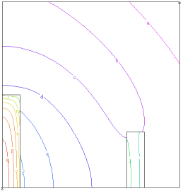

|
radiation_flow |

  
|
|
radiation_flow |
|
{ RADIATION_FLOW.PDE
This problem demonstrates the use of FlexPDE in the solution of problems in radiative transfer.
Briefly summarized, we solve a Poisson equation for the radiation energy density, assuming that at every point in the domain the local temperature has come into equilibrium with the impinging radiation field.
We further assume that the spectral character- istics of the radiation field are adequately described by three average cross-sections: the emission average, or "Planck Mean", sigmap; the absorption average, sigmaa; and the transport average, or "Rosseland Mean-Free-Path", lambda. These averages may, of course, differ in various regions, but they must be estimated by facilities outside the scope of FlexPDE.
And finally, we assume that the radiation field is sufficiently isotropic that Fick's Law, that the flux is proportional to the gradient of the energy density, is valid.
The problems shows a hot slab radiating across an air gap and heating a distant dense slab. } |
 |
title 'Radiative Transfer'
variables
erad { Radiation Energy Density }
definitions
source { declare the parameters, values will follow }
lambda { Rosseland Mean Free Path }
sigmap { Planck Mean Emission cross-section }
sigmaa { absorption average cross-section }
beta = 1/3 { Fick's Law proportionality factor }
equations { The radiation flow equation: }
erad : div(beta*lambda*grad(erad)) + source = 0
boundaries
region 1 { the bounding region is tenuous }
source=0 sigmap=2 sigmaa=1 lambda=10
start(0,0)
natural(erad)=0 { along the bottom, a zero-flux symmetry plane }
line to (1,0)
natural(erad)=-erad { right and top, radiation flows out }
line to (1,1) to (0,1)
natural(erad)=0 { Symmetry plane on left }
line to close
region 2 { this region has a source and large cross-section }
source=100 sigmap=10 sigmaa=10 lambda=1
start(0,0)
line to (0.1,0) to (0.1,0.5) to (0,0.5) to close
region 3 { this opaque region is driven by radiation }
source=0 sigmap=10 sigmaa=10 lambda=1
start(0.7,0)
line to (0.8,0) to (0.8,0.3) to (0.7,0.3) to close
monitors
contour(erad)
plots
contour(erad) as 'Radiation Energy'
surface(erad) as 'Radiation Energy'
vector(-beta*lambda*grad(erad)) as 'Radiation Flux'
{ the temperature can be calculated from the assumption of equilibrium: }
contour(sqrt(sqrt(erad*sigmaa/sigmap))) as 'Temperature'
surface(sqrt(sqrt(erad*sigmaa/sigmap))) as 'Temperature'
end
Page url: index.html?applications_heatflow_radiation_flow.html